6
Memory
Whereas most computers have memory capacities measured in gigabytes, the Arduino Uno has just 2kB. That is more than a million times less memory than a conventional computer. Having only a little memory to work with focuses the mind wonderfully when writing code, however. There is no room for the “bloatware” that plagues most computers.
Although writing memory-efficient code is important, you shouldn’t do so at the expense of writing code that is easy to read and maintain. Even with an Arduino’s limited resources, most sketches will not get close to using all the RAM. You really only need to worry about memory capacity when you have a very complex sketch or a sketch that uses a lot of data.
Arduino Memory
Comparing an Arduino’s memory with that of conventional computers is a little unfair, as they actually use their RAM memory in different ways. Figure 6-1 shows how a PC uses its memory when running a program.
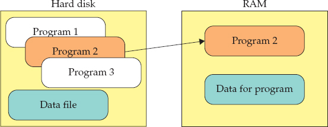
Figure 6-1 How a PC uses memory
When a PC runs a program, it first copies the entire program from the hard disk into RAM and then executes that copy of the program. Variables in the program then use more of the RAM. By contrast, Figure 6-2 shows how an Arduino uses memory when a program is run. The program itself actually runs directly from flash memory. It is not copied into RAM.
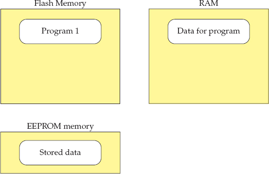
Figure 6-2 How an Arduino uses memory
The RAM in an Arduino is only used to hold the contents of variables and other data relating to the running of the program. RAM is not persistent; that is, when the power is disconnected, the RAM is cleared. If the program needs to store persistent data, then it must write that data to EEPROM. The data can then be read back when the sketch restarts.
When pushing the limits of an Arduino, you have to worry about both RAM usage and, to a lesser extent, the size of the program in flash memory. Because an Arduino Uno has 32kB of flash, this limit is not often reached.
Minimizing RAM Usage
As you have seen, the way to reduce RAM usage is to reduce the amount of RAM used by variables.
Use the Right Data Structures
By far, the most common data type in Arduino C is the int. Each int uses 2 bytes, but most of the time, you don’t represent a number between –32,768 and +32,767, and the much smaller range of 0 to 255 offered by a “byte” does just fine. Most built-in methods that work with an int, will work just the same with a byte.
A common example of how this works is variables used for pin numbers. It is common to use ints for this, as shown in the following example:
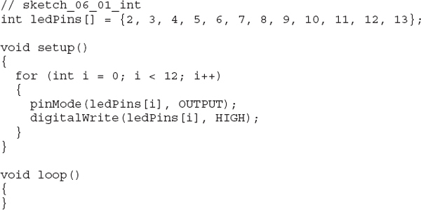
You could easily change the int array to be an array of bytes instead. If you do this, the program functions just the same time, but the array will occupy half the memory.
A really good way to reduce memory usage is to make sure that any constant variables are declared as such. To do this, just put the word const in front of the variable declaration. Knowing that the value will never change allows the compiler to substitute in the value in place of the variable, which saves space. For example, the array declaration in the previous example becomes
Be Careful with Recursion
Recursion is a technique where a function calls itself. Recursion can be a powerful way of expressing and solving a problem. In functional programming languages such as LISP and Scheme, recursion is used a great deal.
When a function is called, an area of memory called the stack is used. Imagine a spring-loaded sweet dispenser, like a Pez™ dispenser, except you are only going to push sweets in from the top or pop sweets off from the top (Figure 6-3). The term push is used to indicate something being added to the stack and pop indicates taking something off the stack.
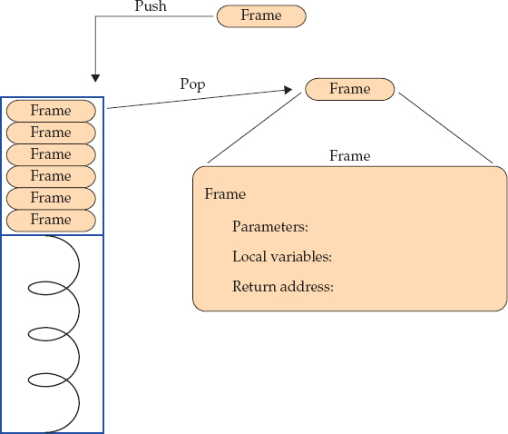
Figure 6-3 The stack
Every time you call a function, a stack frame is created. A stack frame is a small memory record that includes storage space for parameters and local variables used by the function, as well as a return address that specifies the point in the program from which execution should continue when the function has finished running and returned.
Initially, the stack is empty, but when you call a function (let’s call it “function A”), memory is allocated for it and a stack frame is pushed onto the stack. If function A calls another function (function B), then a second record is added to the top of the stack, so the stack now has two records. When function B finishes, its stack frame is popped off the stack, then when function A completes, its stack frame is also popped off the stack. Because local variables for a function are stored on the stack frame, they are not remembered between successive function calls.
The stack uses some of our valuable memory, and most of the time, the stack never has more than three or four records on it. The exception is if you allow functions to call themselves, or to be in a loop of functions calling each other. Then there is the real possibility that the program will run out of stack memory.
For example, the mathematical “factorial” function is calculated by multiplying all the integers that come before a number up to that number. The factorial of 6 is 6 × 5 × 4 × 3 × 2 × 1 = 720.
A recursive definition of the factorial of n is
If n = 0, the factorial of n is 1.
Otherwise the factorial of n is n times the factorial of (n – 1).
You can write this in Arduino C as:
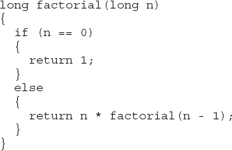
You can find this code and a full sketch that prints the result in sketch_06_02_factorial. Generally, people with a mathematical mind think this is pretty neat. You’ll notice, however, that the depth of the stack equals the number of the factorial you are calculating. It is also pretty easy to see how to write a nonrecursive version of the factorial function:
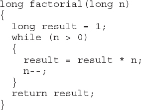
In terms of ease of reading, this code is probably easier to understand; it also uses less memory and is faster. In general, it makes sense to avoid recursion, or restrict it to highly efficient recursive algorithms like Quicksort (http://en.wikipedia.org/wiki/Quicksort), which can put an array of numbers into order very efficiently.
Store String Constants in Flash Memory
By default, if you declare string constants as shown in the following example, those character arrays will be stored in RAM and in flash memory—once for the program code and once when their values are copied into RAM when the sketch is run:
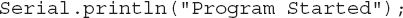
If, however, you use the following code, the string constant will be stored in flash memory only:
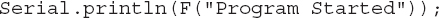
In the “Using Flash” section in this chapter, you’ll see how you can use flash in other ways.
Common Misconceptions
A common misconception is that using short variable names uses less memory. This is not the case. The compiler takes care of such things, so the final variable names do not find their way into the binary sketch. Another misconception is that comments in a program have an effect on the size of the program when it is installed or on the RAM that it uses. This is not true.
You may also assume that dividing your code into lots of small functions will increase the size of the compiled code. This is not usually the case as the compiler is smart enough to actually replace function calls with inline copies of the body of the function as part of its code optimization process. This benefit allows you to write more readable code.
Measure Free Memory
You can find out how much RAM a running sketch is using at any point in time with the MemoryFree library, which you can download from here: http://playground.arduino.cc/Code/AvailableMemory.
This library is easy to use; it provides a function called freeMemory, which returns the number of bytes available. The following sketch illustrates its use:
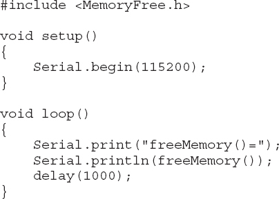
This library can be handy if you start to experience unexplained problems with a sketch that you think might be caused by a memory shortage. The library does, of course, increase your memory usage a little.
Minimizing Flash Usage
When you successfully compile a sketch, you’ll see a status line at the end of the process that says something like this:
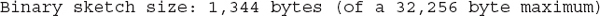
This line tells you exactly how much of the Arduino’s flash memory the sketch will use, so you know if you’re getting close to the 32kB limit. If you are not near the limit, then you don’t really need to try to optimize the flash memory. If you are getting close, then there are a few things that you can do.
Use Constants
When variables are defined, especially pin names, it is quite common to see them defined like this:
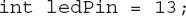
Unless you plan to change which pin is to be used as the LED pin while the sketch is actually running, then you can use a constant. Just add the word const to the front of the declaration:
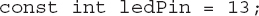
This change saves you 2 bytes, plus 2 bytes for every place that the constant is used. For a much used variable, your savings can amount to a few tens of bytes.
Remove Unwanted Trace
When debugging Arduino sketches, sprinkling the code with Serial.println commands helps you see the value of variables and work out any bugs in the program. These commands actually use a fair bit of flash memory. Any use of Serial.println pulls about 500 bytes of library code into the sketch. So, once you are convinced that the sketch is working, remove or comment out these lines.
Bypass the Bootloader
Back in Chapter 2, you discovered how to program the microcontroller directly on the Arduino using the ISP connector and programming hardware. This approach can save you a valuable couple of kBs, as it means the bootloader does not need to be installed.
Static vs. Dynamic Memory Allocation
If, like the author, you come from a background of writing large-scale systems in languages such as Java or C#, you’re used to creating objects at runtime and allowing a garbage collector to tidy up behind you. This approach to programming is simply inappropriate on a microprocessor with just 2kB of memory. For a start, there is simply no garbage collector, and what is more, allocating and deallocating memory at runtime is rarely necessary in the type of programs written for an Arduino.
The following example defines an array statically, as you would normally in a sketch:
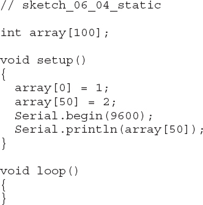
The memory that the array uses is known while the sketch is being compiled; therefore, the compiler can reserve the necessary amount of memory for the array. This second example also creates an array of the same size, but it allocates the memory for it at runtime, from a pool of available memory. Note that versions of the Arduino software prior to 1.0.4 do not support malloc.
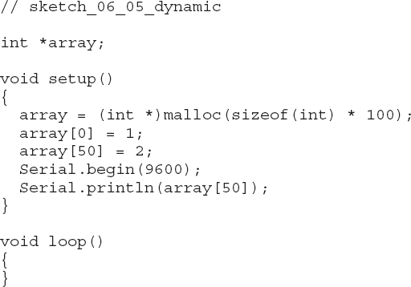
You start by defining a variable int *array. The * indicates that this is a pointer to an integer value (or, in this case, array of ints) rather than a simple value. The memory to be used by the array itself is not claimed for use by the array until the following line is executed in setup:
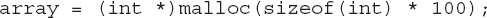
The malloc (memory allocate) command allocates memory from an area of RAM called the heap. Its argument is the number of bytes to be allocated. Because the array contains 100 ints, you need to do a little calculation to work out how many bytes to reserve. Actually, you could just write 200 as the parameter to malloc because you know that each int occupies 2 bytes of memory, but by using the sizeof function, you can make sure to get the right number.
After the memory has been allocated, you can use the array just as if you had allocated it statically. The only advantage to allocating it dynamically is that you can delay the decision about how large to make it until the sketch is actually running (runtime).
The danger with dynamic memory allocation is that you can easily get in a situation where memory is allocated but not released, so then the sketch unexpectedly runs out of memory. Running out of memory can cause the Arduino to hang. If all the memory is allocated statically, however, this cannot happen.
Note that I have developed hundreds of Arduino projects and have yet to find a compelling reason to use dynamic memory allocation on an Arduino.
Strings
Strings (text) are used less commonly in Arduino programming than in more conventional software development. In most software development, strings are the most used data type because most programming is about user interfaces or databases, which naturally involve text of some sort.
Many Arduino programs have no need to represent strings of text at all, or, if they do, it’s in Serial.println commands used to debug a buggy sketch.
There are essentially two methods for using strings in Arduino: the old way (C char arrays) and the new way, the String Object library.
C char Arrays
When you define a string constant by typing something like
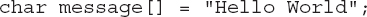
you are statically defining a char array that is 12 characters long. It is 12 characters rather than the 11 letters of “Hello World” because there is a final terminating character of 0 to mark the end of the string. This is the convention for C character strings, and it allows you to use larger arrays of characters than the string that you are interested in at the start (Figure 6-4). Each character letter, number, or other symbol has a code called its ASCII value.
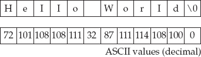
Figure 6-4 A null-terminated C char array
Note that another commonly used convention for string constants is to write:
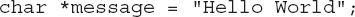
This syntax works similarly but declares message to be a pointer to a character (the first character of the array).
Formatting Strings with Multiple Prints
Much of the time, this is the only way you need to use a string, for instance, to display a message on an LCD screen or as a parameter to Serial.println. You may think that being able to join strings and convert numbers to strings is essential. For example, let’s look at a specific problem—how to display a message on an LCD screen such as “Temp: 32 C.” You might believe you need to join the number 32 to a string "Temp: " and then add the string " C" onto the end. Indeed, if you are a Java programmer, you will probably expect to write the following in C:
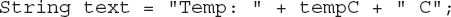
Sorry, that’s not the way it works in C. In this case, you can print this message simply by using multiple print statements, as shown in this example:
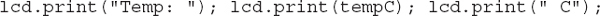
This method removes the need for any behind-the-scenes copying of data that would go on during string concatenation in other newer languages.
The same multiple outputs approach works with the Serial Monitor and Serial.print statements. In this case, you generally make the last print on the line a println to add a newline to the output.
Formatting Strings with sprintf
The standard C string library (not to be confused with the Arduino String Object library discussed in the next section) includes a very useful function called sprintf to format character arrays. This fits variables into a pattern string, as shown in the following example:
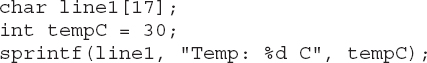
The character array line1 is a string buffer that is used to contain the formatted text. The size is specified as 17 to allow an extra null character on the end. I chose the name line1 to illustrate how this could be the contents of the top line of a 16-character by two-line LCD display.
The sprintf command’s first parameter is the character array into which the result is to be written. The next argument is the formatting string that contains a mixture of literal text like Temp: and formatting commands like %d. In this case, %d means signed decimal. The remainder of the parameters will be substituted in order into the formatting string in place of the formatting commands.
If your LCD display were to show the time on the second line, then you could format the time from separate hours, minutes, and seconds using the following line:
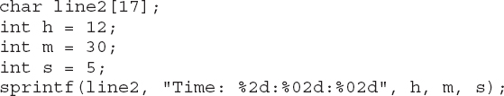
If you were to print line2 to the Serial Monitor or an LCD screen, it would look like this:
Not only have the numbers been substituted in the correct place, but also a leading zero is in front of the 5 digit. In the sketch, between each : you have the formatting commands for the three parts of the time. For the hour, it is %2d, which means display the value with a length of two digits as a decimal. The formatting command for minutes and seconds is slightly different (%02d). This command still means format as two characters, but include a leading zero.
Be wary, though, this approach works for ints, but the Arduino developers have not implemented the standard C library formatting for other types such as floats.
Finding the Length of a String
Because the string within a character array is often smaller than the actual character array containing it, a useful function, called strlen, is available. strlen counts the number of characters in the array before the null that marks the end of the string.
The function returns the size of the string (excluding the null) and takes the character array as its only argument, for instance,
returns the number 3.
The Arduino String Object Library
Versions of the Arduino IDE since version 019, several years ago, have included a String library that is far more familiar and friendly to developers used to Java, Ruby, Python, and so on, where the norm is to construct strings by concatenation, often using “+”. This library also offers a whole host of useful string searching and manipulation features.
This library, of course, comes at the cost of adding several kBs to your sketch size should you use it. It also uses dynamic memory allocation, with all its associated problems of running out of memory. So think carefully before you decide to use it. Many Arduino users stick to C character arrays instead.
This library is beautifully easy to use, and if you have used strings in Java, you will be very at home with the Arduino String Object library.
Creating Strings
You can create the string using a char array, int, or float, as shown in the following example:
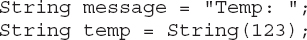
Concatenating Strings
Strings can then be concatenated with each other and other data types using +. Try placing the following code in the setup function of an otherwise empty sketch:
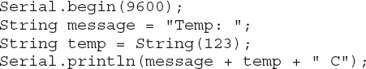
Notice how the final value being concatenated to the String is actually a character array. As long as the first item in the sequence of values in between the + signs is a string, the items will automatically be converted into strings before being concatenated.
Other String Functions
Table 6-1 summarizes some of the more useful things that you can do with String functions. For chapter and verse on the functions available, see this reference: http://arduino.cc/en/Reference/StringObject.
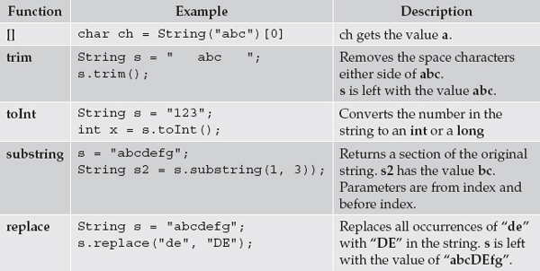
Table 6-1 Some Useful String Functions
Using EEPROM
The contents of any variable used in an Arduino sketch will be cleared and lost whenever the Arduino loses power or is reset. If you need to store values persistently, you need to write them a byte at a time into EEPROM memory. The Arduino Uno has 1kB of EEPROM memory.
NOTE This is not an option for the Arduino Due, which does not have any EEPROM. Instead you must write data to a microSD card.
Reading and writing to EEPROM memory requires a library that is preinstalled in the Arduino IDE. The following example shows how to write a single byte of EEPROM, in this case, from the setup function:
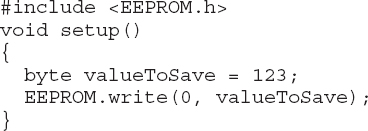
The first argument of the write function is the address in the EEPROM to which the byte should be written, and the second argument is the value to be written to that address.
The read command is used to read the data back from EEPROM. To read back a single byte, you just use the line
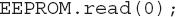
where 0 is the EEPROM address.
EEPROM Example
The following example shows a typical scenario where a value is written during the normal running of a program and then read back during startup. The application is a door lock project using the Serial Monitor to enter codes and change the secret code. The EEPROM is used so the secret code can be changed. If the code had to be reset every time the Arduino started, then there would be no point in allowing the user to change the code.
During the discussion that follows, certain areas of the sketch will be highlighted. If you wish to see the entire sketch in your Arduino IDE, it is called sketch_06_06_EEPROM_example and can be found with the rest of the code for this book at www.simonmonk.org. You may find it useful to run the sketch to get a feel for how it works. It does not require that you connect any extra hardware to the Arduino.
The setup function contains a call to the function initializeCode.
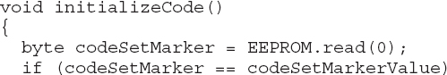
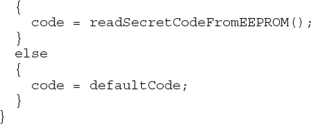
This function’s job is to set the variable code (the secret code) to its value. This value is generally a value read from EEPROM, but there are a few difficulties with this setup.
EEPROM contents are not cleared by uploading a new sketch; once written, EEPROM values can only be changed by writing a new value on top of the old value. So if this is the first time that the sketch has been run, then there is no way to know what value might be left in EEPROM by a previous sketch. You could be left with a lock, that is, a code whose value you do not know.
One way around this is to create a separate sketch specifically to set the default code. This sketch would need to be installed on the Arduino before the main sketch.
A second, less reliable, but more convenient approach is to use a marker value that you write to the EEPROM to indicate that the EEPROM has had a code written to it. The downside of this approach is there is a slim chance that the EEPROM location used to store this flag already contains it. If so, this solution would be unacceptable if you were defining a commercial product, but here you can elect to take that risk.
The initializeCode function reads the first byte of EEPROM and if it equals codeMarkerValue, which is set elsewhere to 123, it is assumed that the EEPROM contains the code and the function readSecretCodeFromEEPROM is called:

This function reads the 2-byte int code in bytes 1 and 2 of the EEPROM (Figure 6-5).
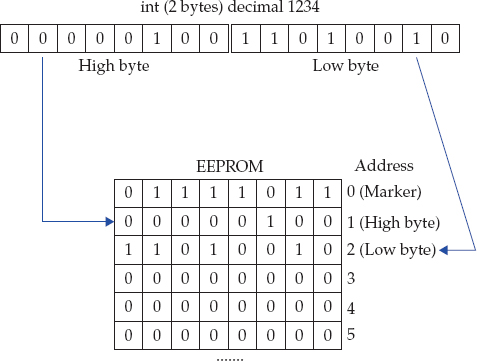
Figure 6-5 Storing an int in EEPROM
To convert the two separate bytes into a single int, you have to shift the high bytes to the right 8 binary digits (high << 8) and then add the low bytes.
The stored code is only read when the Arduino resets. You should, however, write the secret code to EEPROM every time it is changed, so if the Arduino is powered down or reset, it still has the code available in EEPROM to be read back.
The function saveSecretCodeToEEPROM is responsible for this:
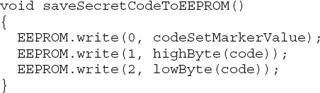
This sets the code marker in EEPROM position 0 to indicate that there is a valid code in EEPROM and then writes the two bytes of the code to EEPROM. The Arduino utility functions highByte and lowByte are used to separate the parts of the int code.
Using the avr/eeprom.h Library
The Arduino EEPROM library only allows you to read and write one byte at a time. In the example shown in the previous section, you got around this restriction by splitting the int into two bytes in order to save and retrieve it in EEPROM. An alternative is to use the underlying EEPROM library provided by AVR. This gives you more options, including reading and writing a Word (16 bits) and blocks of memory of arbitrary size.
The following sketch uses this library to save and read an int directly, incrementing it every time the Arduino restarts:
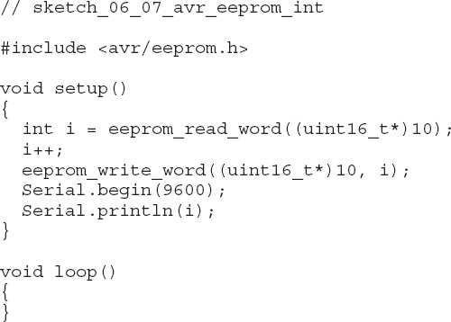
The argument to eeprom_read_word (10) and the first argument to eeprom_write_word are the starting position of the word. Note that this occupies two bytes, so if you want to save another int, you specify an address of 12, not 11. The text (uint16_t*) before 10 is needed to make the index position the type expected by the library function.
The other useful pair of functions in this library are eeprom_read_block and eeprom_write_block. These functions allow data structures of any length (space permitting) to be stored and retrieved.
For example, let’s make a sketch to write a character array string, starting at position 100 in EEPROM:
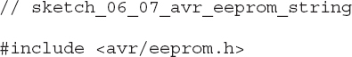
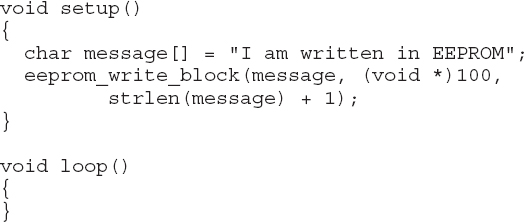
The first argument to eeprom_write_block is the pointer to the char array to be written, the second is the starting location in EEPROM (100). The final argument is the number of bytes to write. This is calculated here as the length of the string plus one to include the null character at the end of the string.
The following sketch reads the string back in again and displays it on the Serial Monitor along with the string length:
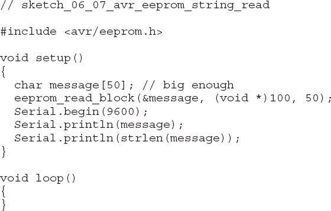
To read the string, a character array of size 50 is created. The function eeprom_read_block is then used to read the next 50 characters into message. The & sign before message provides the function with the message’s address in RAM.
Because the message has a null on the end, when it is printed by the Serial Monitor, only the text expected (not the full 50 characters) is displayed.
EEPROM Limitations
EEPROM is slow to read and write (about 3ms). It is also only guaranteed to be reliable for 100,000 write cycles before it starts suffering from amnesia. For this reason, you need to be careful not to write to it every time around a loop, for example.
Using Flash
An Arduino has a lot more flash memory than it does any other type of memory. For an Arduino Uno, that is 32kB compared with 2kB of RAM. This makes it a tempting place to store data, especially as flash memory does not forget when it loses power.
There are, however, a few snags with storing data in flash memory:
• The flash memory in an Arduino can only be written to about 10,000 times before it becomes useless.
• The flash contains your program, so, if you miscalculate and write over the program, very strange things could happen.
• The flash also contains the bootloader and overwriting that will “brick” your Arduino unless you have an ISP programmer to rescue it (see Chapter 2).
• Flash can only be written a block (64 bytes) at a time.
Having said all that, it is quite easy and safe to use flash to hold constant data that are not going to change during the running of a sketch.
A third-party library is being developed that allows the Arduino Due’s flash memory to be read and written to, to make up for its lack of EEPROM. You can find out more about this project here: http://pansenti.wordpress.com/2013/04/19/simple-flash-library-for-arduino-due/.
The easiest way to create flash-stored string constants is to use the F function that I described in an earlier section. The syntax is repeated here as a reminder:
This form only works when you are using the string constant directly in a message like this. You cannot, for example, assign the result to a char pointer.
A more flexible, and therefore more complex, way of doing this is to use the Program Memory (PROGMEM) directive, which can be used to store any data structure. The data, however, must be constant data that will not change during the running of the sketch.
The following example illustrates how you can create an array of ints that will be stored in flash memory:
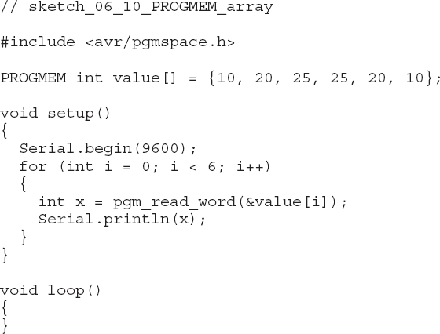
By putting the PROGMEM directive in front of the array declaration, you ensure that it is only stored in flash memory. To read value out of it, however, you now have to use the function pgm_read_word from the avr/pgmspace library:
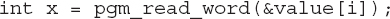
The parameter to this function uses the & symbol in front of the array name to indicate that it is the address of this array element in flash memory that is required rather than the value itself.
The pgm_read_word function reads a word (2 bytes) from flash; you can also use the pgm_read_byte and pgm_read_dword to read 1 byte and 4 bytes, respectively.
Using SD Card Storage
Although Arduino boards do not have SD card slots, several different types of shield, including the Ethernet shield and the MP3 shield shown in Figure 6-6, do have an SD or microSD card slot.
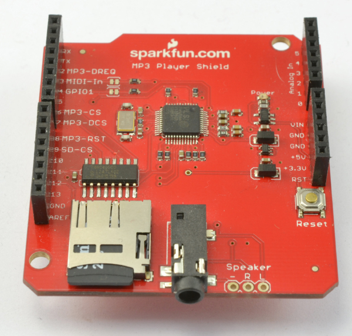
Figure 6-6 MP3 shield with microSD card slot
SD cards use the SPI bus interface (the topic of Chapter 9). Fortunately, to use SD cards with Arduino, you do not need to do any low-level SPI programming as there is a library included with the Arduino IDE called simply “SD.”
This library includes a set of example sketches for using the SD card in various ways, including finding out information about the SD card as displayed in the Serial Monitor, as shown in Figure 6-7.
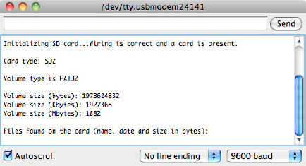
Figure 6-7 Results of the Cardinfo example sketch
Writing to the SD card is made easy, as the code snippet here shows:
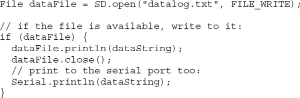
Summary
In this chapter, you have learned about all aspects of memory and data storage within Arduino. In the next chapters, you will explore Arduino programming for various types of serial interface, starting with the I2C bus.